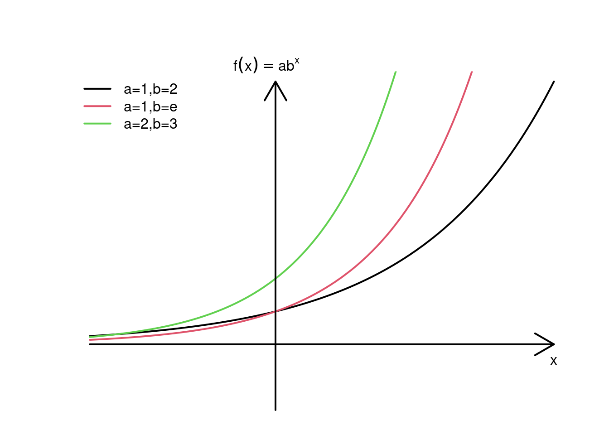

Kapitel 10 Weitere Funktionen zur ökonomischen Modellierung
10.1 Exponentialfunktion
Exponentialfunktionen erfassen Wachstumseffekte (z.B. Populationen, Geld). Im Gegensatz zu Potenzfunktionen wird der Exponent nun zur Funktionsvariable.
Beispiel für exponentielles Wachstum ist der Zinseszinseffekt einer mehrperiodigen Geldanlage (Anfangkapital 50 TEUR, Zinssatz 10%): \[\begin{array}{c|cccccc}\hline \text{Jahr}&0&1&2&3&4&5\\ \text{Kapital (TEUR)}&50&55&60,5&66,55&73,21&80,53\\\hline \end{array}\] Wie bereits besprochen, berechnet sich das Kapital nach \(x\) Jahren in dem Fall als:
\[50\cdot1,1^x.\]
Es könnte also als Funktion von \(x\) angesehen werden mit zwei Parametern: die Anfangsinvestition von 50 TEUR und der Wachstumsfaktor von 1,1.
Definition 10.1 (Exponentialfunktion) Definition (Exponentialfunktion)
Eine Exponentialfunktion beschreibt exponentialles Wachstum und hat die Form: \[f(x) = ab^x, ~~x\in\mathbb R.\] Parameter \(b\) heisst Basis der Funktion. Definitionsbereich von \(f(x)\) ist der gesamte \(\mathbb R\), Wertebereich beschränkt sich auf \(\mathbb R_+.\)

- Alle Exponentialfunktionen haben an der Stelle 0 den Wert \(a\), da \(b^0=1\)
- Je größer die Basis ist, desto steiler die Exponentialfunktion.
Beispiel 10.1 (Kapitalanlage) Beispiel (Kapitalanlage)
Die Funktion, die das Wachstum von Vermögen nach \(x\) Perioden beschreibt, sieht folgendemaßen aus:
\[k(x)=50\cdot1,1^x.\]
Es handelt sich also um eine Exponentialfunktion mit \(a=50\) und \(b=1,1.\)
Beispiel 10.2 (Exponentielles Wachstum: Corona-Pandemie) Beispiel (Corona-Pandemie)
Wenn man annimt, dass jede infizierte Person zwei weitere Personen im Laufe einer Woche ansteckt, dann sieht die Zumahne an Neuansteckungen wie folgt aus (klicke auf Start):
10.2 Logarithmusfunktion
In dem Beispiel mit Kapitalanlage zu bestimmten Konditionen könnten wir uns zudem fragen, wie lange dauert es, bis die angelegte Geldsumme einen bestimmten Wert erreicht. Dies würde bedeuten, dass wir die Exponentialfunktion umkehren müssen.
Mit einer Umkehrfunktion macht man die Funktionsvorschrift rückgängig. Der Logarithmus ist die Umkehrfunktion zur Exponentialfunktion. Bspw.: \(2^{4} =16 \rightarrow \log_2(16)=4\). Interpretation: „2 hoch wieviel ist 16?“.
Definition 10.2 (Logarithmusfunktion) Logarithmus und Rechenregeln
Der Logarithmus von \(x\) zur Basis \(b\) wird geschrieben als: \[f(x)=\log_b(x),~~ x>0\] und ist die Umkehrfunktion zu der Exponentialfunktionn \(b^{\log_b(x)}=x.\)
Wenn \(b=e\) spricht man von dem natürlichen Logarithmus und bezeichnen ihn als \(\ln(x)\). Nützlich für die Berechnung (mit dem Taschenrechner) ist die Regel: \[\log_b(x) = \frac{\ln(x)}{\ln(b)}.\]
Wichtige Rechenregeln: \[\log(x\cdot y) = \log(x) + \log(y),\] \[\log\left(\frac xy\right) = \log(x) - \log(y),\] \[\log(x^r) = r\cdot \log(x).\]
Beispiel 10.3 (Rechnen mit Logarithmen) Beispiel (Rechnen mit Logarithmen)
- \(\log_2(24)=\log_2(8\cdot 3)=\log_2(8)+\log_2(3) = 3+\log_2(3) = 3+\frac{\ln(3)}{\ln(2)}\)
- \(\log_2(\frac 83)=\log_2(8)-\log_2(3) = 3-\log_2(3)=3-\frac{\ln(3)}{\ln(2)}\)
- \(\log_2(8^3)=3\cdot\log_2(8)= 3\cdot 3=9\)
Beispiel 10.4 (Kapitalanlage) Beispiel (Kapitalanlage)
Die Funktion, die uns die Periodenanzahl wiedergibt, nach der das Vermögen einen bestimmten Wert erreicht hat, ist:
\[x(k)=\log_{1,1}\left(\frac{k}{50}\right).\]
Es handelt sich also um eine Logarithmusfunktion mit \(b=1,1.\)
Man kann den Ausdruck noch etwas vereinfachen (siehe Rechenregeln): \[x(k)=\log_{1,1}\left(\frac{k}{50}\right) = \frac{\ln\left(\frac{k}{50}\right)}{\ln(1,1)} = \frac{\ln(k) - \ln(50)}{\ln(1,1)}.\]
Graphische Darstellung von Exponentialfunktion
\[f(x) = a\cdot b^x,\]
mit \(a=50\) und \(b=1,1.\)
Quiz Exponential- und Logarithmusfunktionen
Bakterienzellen.
Minuten bis aus anfänglich \(1000\) Bakterienzellen \(10000\) sich gebildet haben. (Runde auf vier Nachkommastellen.)